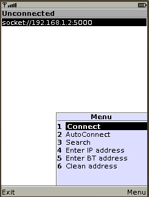

How to use anyRemote J2ME client
Download it
You can download J2ME client from Preferences window of kAnyRemote/gAnyRemote or download it manually from download area.
Install it
First You have to install J2ME client on Your phone. This could be done with
- Device Detail window of kAnyRemote/gAnyRemote
- GUI frontend or KDEbluetooth or gnome-obex-send
(be sure that anyremote-J2ME-client package is already installed) or - through WAP from download area
There are several variants of JAR file, so You can choose variant which is more suitable for Your phone:
- anyRemote-16.jar - contains 16x16 icon set. Best variant for phones with screen 160x160 or lower.
- anyRemote-32.jar - contains 32x32 icon set.
- anyRemote-48.jar - contains 48x48 icon set. Best variant for phones with screen 240x320
- anyRemote-64.jar - contains 64x64 icon set. Best variant for phones with screen higher than 240x320
- anyRemote-128.jar - contains 128x128 icon set.
- anyRemote-full.jar - contains 16x16, 32x32, 48x48, 64x64 and 128x128 icon sets and 16x16 title icon.
- (deprecated) anyRemote-nojsr82.jar - contains 48x48, 64x64 and 128x128 icon sets and 64x64 title icon. (does not supports JSR82)
The only difference between anyRemote-XX.jar's and anyRemote-XXb.jar's is the size of title icon (16 or 64). In general, anyRemote-XXb.jar suggested to use on Nokia's, and anyRemote-XX.jar on all other cell phones.
Note for WinMobile users
It is strongly recommended to use Esmertes Jeodek.
Server side setup
Firstly, it needs to run anyRemote on PC.
Also, be sure what anyRemote web interface is stopped.
Run it
 After startup of J2ME client You will see this picture on phone's screen. If You start J2ME client for the first time then list of connections will be empty. Run "Search" to find anyRemote on PC (You have to start it before and enable page and inquiry scans on PC's bluetooth adapter of course).
If search is unsuccessful be double sure that page and inquiry scans are enabled on bluetooth adapter. This can be done by command:
hciconfig hci0 piscan
You can enter address to connect directly. If You plan to connect to anyRemote through internet or Wi-Fi
enter something like socket://192.168.1.2:5000 (be sure You have started anyRemote with -s socket:5000 option).
If You plan to connect to anyRemote through bluetooth enter something like btspp://0008F4163049:19, where 0008F4163049
is bluetooth address of PC. To determine it use hcitool dev command.
Connect to anyRemote
Select item from list of connections and then choose Connect menu item (see picture above). After one or two seconds You will see main screen of J2ME client.
If You want J2ME client to connect to an device automatically upon startup, then choose AutoConnect menu item (see picture above).
Look and behaviour of J2ME client is determined by configuration file, which used by anyRemote and may vary significantly. The following screenshots are just examples of how it could look like.